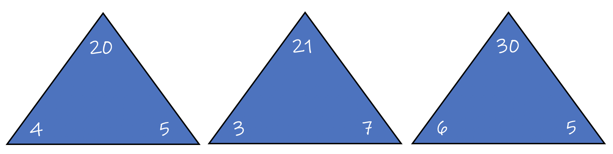
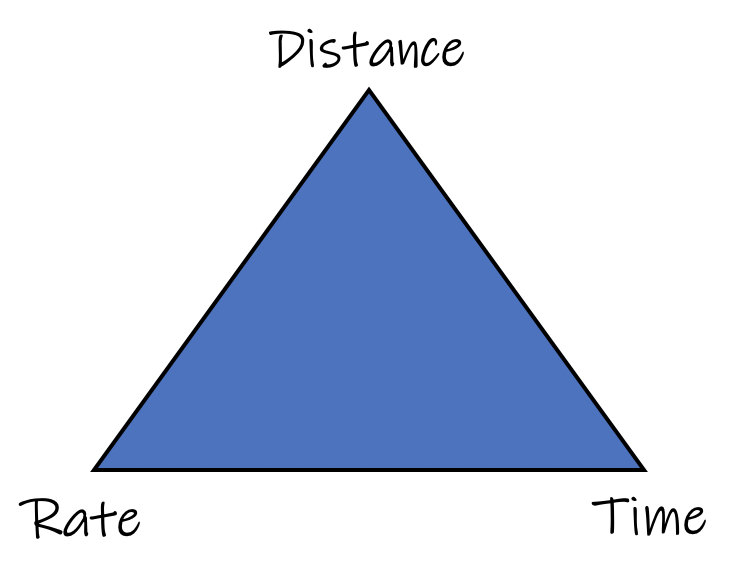
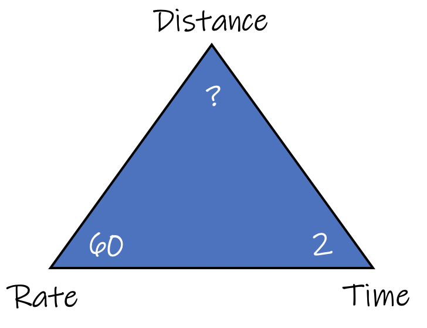
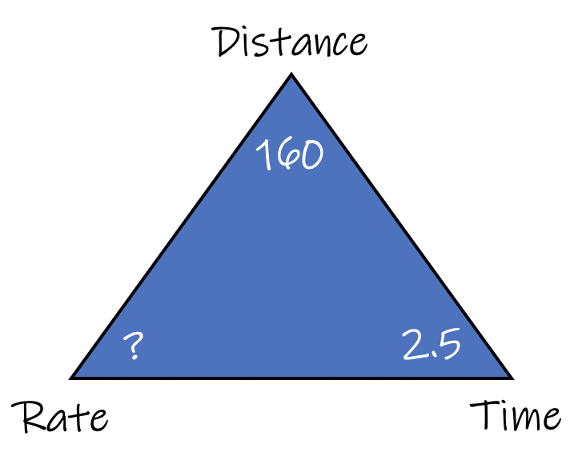
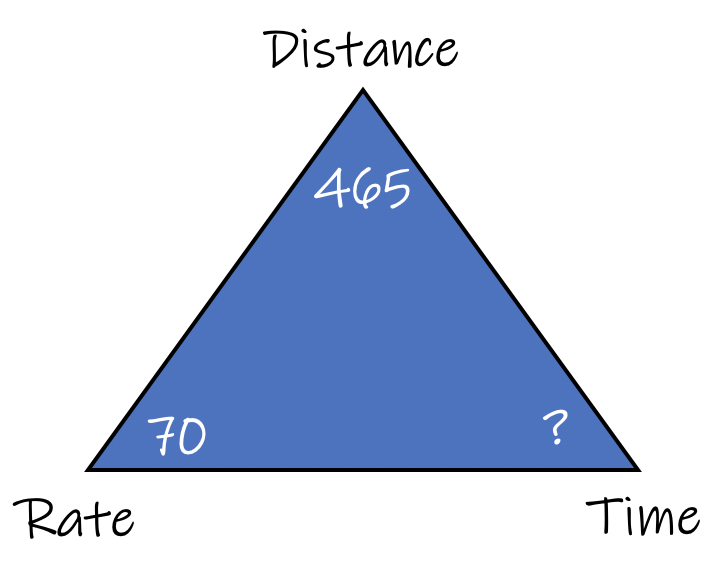

When dealing with traveling, there is a distinct relationship between the distance traveled, how fast you drive, and the time spent driving, in hours.
Distance = Rate x Time
Before we look at the formula, let's cover a pre-skills topic that will help you remember the steps to get the answer.
The triangles shown below are called "Math-Fact Triangles".
The number at the top of the triangle is always equal to the result of multiplying the two numbers at the bottom left and right corners.
The number at the top of the triangle divided by the number in the bottom left corner, equals the number in the bottom right corner.
The number at the top of the triangle divided by the number in the bottom right corner, equals the number in the bottom left corner.
For Math Fact Triangles these relationships are always true.
The relationship between distance, rate, and time can be modeled using a math fact triangle. 
The Math Fact Triangle has three relationships:
Rate x Time = Distance
Distance ÷ Rate = Time
Distance ÷ Time = Rate
When working out a distance, rate, and time problem, use the diagram to set up your problem so you can get the correct answer.
Example 1:
Stan drives 60 mph for 2 hours. How far did Stan drive?

The 2 bottom numbers always multiply to equal the top number.
We need Distance. 60 x 2 = 120 miles
Example 2:
Betty drove 160 miles in 2 1/2 hours. How fast was she driving?

The top number divided by the bottom right corner equals the missing value in the bottom left corner.
160 ÷ 2.5 = 64. Betty was driving 64mph.
Example 3:
Jeff drove 70 miles per hour for a total distance of 465 miles. How long did Jeff drive.

The top number divided by the bottom left corner equals the missing value in the bottom right corner.
465 ÷ 70 = 6.6. Jeff drove for 6.6 hours.